Synopia app icon and favicon
Both are built from the agent mark in the sidebar: a solid core with an orbit around it. Icons stay still, because in the app motion means a session is running.
Options considered
Each option at 112 and 32 px, then in greyscale to check that the shape works without colour.
Chosen icon at every export size
The PNG exports at 1:1, except 1024 and 512, which are shown at 160. Sizes 16 to 64 come from icon-small.svg, 128 and up from icon.svg.

In the Dock
Next to neutral placeholder icons on the same grid, on a light and a dark desktop.
Favicon in browser tabs
At real size, 16 px, in the active tab and a background tab.
The 16 px export enlarged eight times. A paper tile with a dark edge, so it separates from light bars and stands out on dark ones. The ring and the gap are about two pixels each and the core is four, so the centre point still sits inside its orbit.